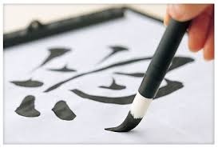

Kaligrafia chińska
 |
 |  |
 |
Narzędzia kaligrafiiChińska kaligrafia wyróżnia się od innych kaligrafii techniką. Znaki malowane są na specjalnym papierze zwanym Xuan (papier ryżowy), przy użyciu specjalnego pędzla i atramentu (tuszu). Atrament jest przygotowywany z sadzy sosny lub dymu ropy z dodatkiem substancji kleistej. Do jego przechowywania używa się wyrobów garncarskich. Naczynia te są twarde i płaskie, a kaligrafista używa ich do mieszania wody z atramentem, który produkuje przez pocieranie lub kruszenie na nich patyczka atramentowego. Ważnym jest aby przewidzieć właściwą ilość atramentu potrzebną do skończenia pracy. Ważnym jest aby przewidzieć właściwą ilość atramentu potrzebną do skończenia pracy. Pędzle są wykonywane z bambusa wraz z wiązką sierści zwierząt jak jelenia, królika, wilka, owcy itd. Wybór poszczególnych zwierząt zależy od typu kaligrafii. Cienkie typy sierści (np.: królika) były używane kiedy kaligrafia była bardziej delikatna. Kaligrafista zawsze trzyma pędzel w taki sposób, aby dłoń nie miała kontaktu z włosiem.
|